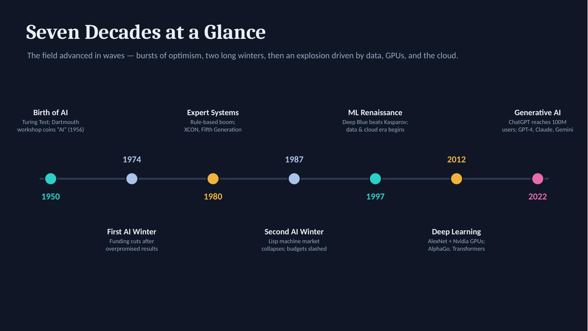
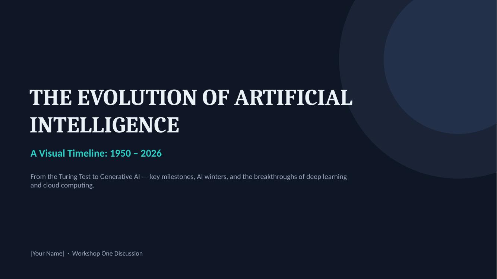
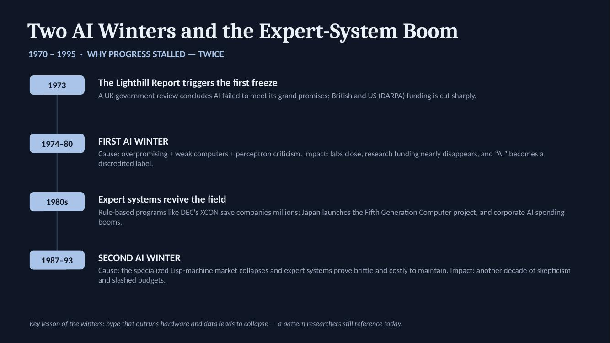

artifact_01 · visual research
The Evolution of AI: A Visual Timeline (1950–2026)
- title
- The Evolution of AI: A Visual Timeline (1950–2026)
- introduction
- A designed, eight-slide visual timeline tracing artificial intelligence from Alan Turing's 1950 question to today's generative AI race — including the two "AI winters" that nearly killed the field.
- description
- The deck opens with a seven-decade overview timeline, then dedicates a slide to each era: the birth of AI (1950–1969), the two AI winters and the expert-system boom (1970–1995), the machine learning and cloud comeback (1997–2011), the deep learning revolution (2012–2019), and the generative AI era (2020–present), closing with sources. Each milestone carries a plain-language explanation of why it mattered, and the AI winters are annotated with their causes and impacts.
- objective
- To understand — and help others understand — how AI actually developed: not as a straight line of progress, but as cycles of hype, collapse, and breakthrough driven as much by hardware and data as by algorithms.
- process
- I researched milestones across three source types (a documentary video, an IEEE overview, and Our World in Data's compute-growth analysis), selected the events that best explain each era's turning point, organized them chronologically, and designed the deck with a dark circuit-board visual theme, color-coding eras and using an alternating node layout for the overview timeline.
- tools and technologies used
- Microsoft PowerPoint for the final deck; Claude (Anthropic) for research assistance and milestone organization; sources listed below.
- value proposition
- This artifact shows I can research a complex technical history, judge which details matter, and communicate them visually to a non-technical audience — the same skill needed to brief stakeholders on any AI initiative.
- unique value
- Most AI timelines celebrate the wins. Mine gives equal weight to the failures — the winters — because as someone who has trained an LLM, I know overpromising is the field's oldest failure mode, and the leaders who remember it make better decisions.
- relevance
- For hiring managers and collaborators: evidence of research synthesis, visual communication, and historical judgment about AI hype cycles — directly applicable to technology strategy and stakeholder education.
- references
-
- Putchuon – "Put You On." (2024). The entire history of artificial intelligence (Last 100 years) [Video]. YouTube.
- IEEE Computer Society. (n.d.). The evolution of AI: From foundations to future prospects.
- Roser, M., et al. (n.d.). A brief history of artificial intelligence. Our World in Data.


